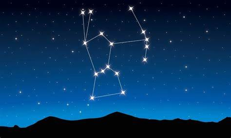
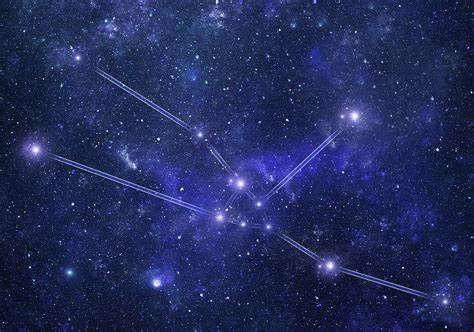
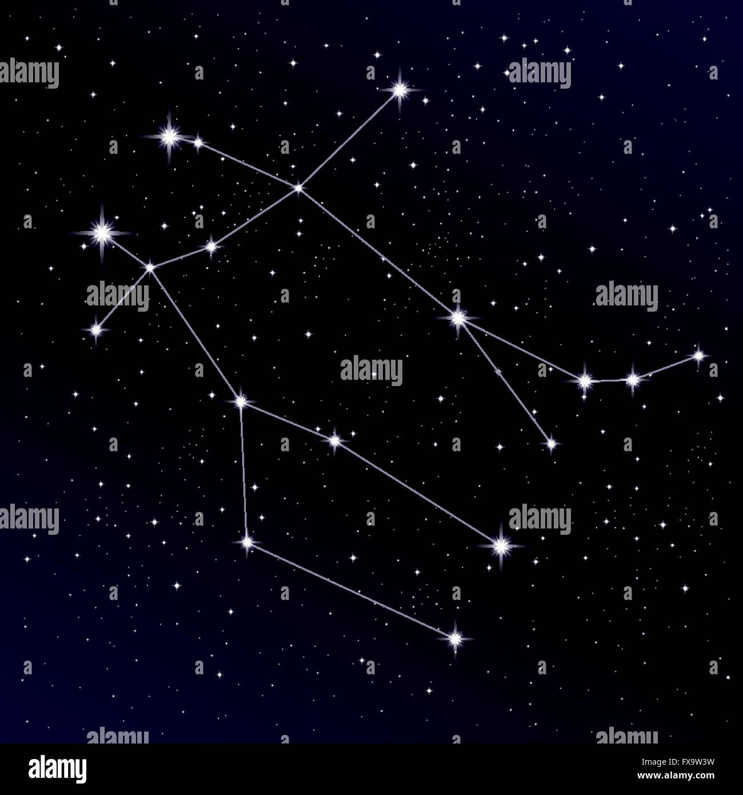

STAR CONSTELLATION
A constellation is a section of the celestial sphere where groups of visible stars appear to form patterns or outlines, often depicting animals, mythological figures, or objects. The earliest constellations likely date back to prehistoric times, when people used them to share stories about their beliefs, experiences, creation myths, and legends. Various cultures and nations created their own unique constellations, some of which persisted until the early 20th century before today's standardized constellations were established globally. The way constellations are recognized has evolved over time; some changed in size or shape, gained popularity, or faded into obscurity, while others were unique to certain cultures or nations. Naming constellations has also aided astronomers and navigators in identifying stars more easily.
ORION
In Greek mythology, Orion was a highly skilled hunter. His talents were so impressive that King Oenopion enlisted his help to protect the island of Chios from a dangerous beast, which is why the constellation is known as The Hunter.
Orion is one of the most recognizable constellations in the night sky, partly because its stars are arranged in a fairly straight line and evenly spaced. It also stands out due to the presence of two of the brightest stars recorded: Alpha Orionis (Betelgeuse) and Beta Orionis (Rigel).
Orion's prominent asterism is often referred to as the Three Sisters or Three Kings, as it features three bright stars: Mintaka, Alnilam, and Alnitak. Another remarkable feature of Orion is the Orion Molecular Cloud Complex, a region containing young stars, H II regions, and dense dark clouds.
TAURUS
The constellation next to Orion is Taurus, often called "The Bull." Positioned above Orion, Taurus is easy to spot if you locate Aldebaran, the 14th brightest star in the sky.
In astronomy, "Messier objects" are celestial bodies cataloged by the French astronomer Charles Messier. Taurus contains two of these objects: Messier 1, known as the Crab Nebula, a supernova remnant, and Messier 45, commonly known as the Pleiades.
GEMINI
Once you find Orion, look northeast to spot Gemini. Alternatively, you can locate Taurus and Cancer, then look between them to find this constellation, along with its two brightest stars, Pollux and Castor.
Pollux has a planet orbiting it, while Castor, though without planets, is accompanied by two other stars in its system.Gemini contains one
Gemini contains one Messier object, Messier 35, and several notable celestial bodies that are difficult to see with the naked eye. However, with a powerful telescope, you can observe the Geminga neutron star, the Medusa Nebula, and the Eskimo Nebula.
